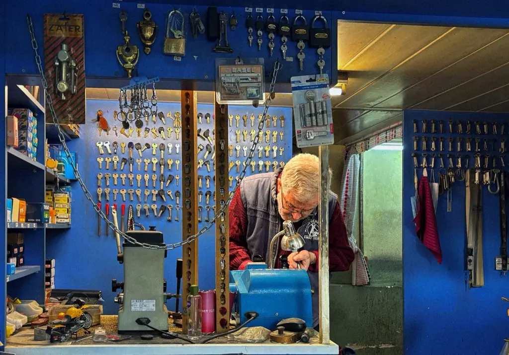

Doubles de clés
Plus de 2 000 modèles de clés en stock : plates, à gorges, à pompe, sécurisées sur carte.
Un double de clé en cinq minutes, une serrure réparée plutôt que remplacée.
Notre boutique rue des Orfèvres reproduit vos clés, badges et télécommandes pendant que vous attendez. Nos serruriers se déplacent pour vos serrures, et restaurent les mécanismes anciens des immeubles strasbourgeois.
Sans rendez-vous en boutique, du mardi au samedi.

Cliquez sur votre situation : le formulaire se remplit tout seul.
L'atelier
Plus de 2 000 modèles de clés en stock : plates, à gorges, à pompe, sécurisées sur carte.
Copie de badges d'immeuble et de télécommandes de portail ou de garage.
Clés à transpondeur et télécommandes pour la plupart des modèles, programmées sur place.
Réparation et restauration des serrures et crémones des immeubles anciens.
Remplacement, mise en place de serrures multipoints, conseil de sécurité.
Boîtes aux lettres, casiers, meubles, cadenas.
Comment ça se passe
Avec votre clé, votre badge ou une photo de votre serrure.
Conseil, prix et délai annoncés au comptoir.
Doubles en cinq minutes, réparations en quelques jours.
Pour la pose de serrures, rendez-vous à l'heure qui vous arrange.
Réalisations récentes
Neustadt · Immeuble de 1900
Strasbourg · Copropriété
Schiltigheim · Maison
Nos engagements
Pierre Hardy, serrurier, troisième génération
« Double de clé fait en cinq minutes, qui fonctionne du premier coup. C'est rare. »
« Ils ont sauvé la serrure d'origine de notre porte de 1905 au lieu de la remplacer. Un vrai savoir-faire. »
Questions fréquentes
Votre question n'est pas là ?
Appelez-nous au 03 53 01 45 91.
Cinq minutes environ pour une clé courante, pendant que vous attendez. Les clés sécurisées demandent votre carte de propriété et parfois une commande.
Dans la plupart des cas oui, en boutique. Certains badges cryptés ne sont pas copiables : on vous le dit tout de suite.
Oui, pour la plupart des modèles, avec programmation de la puce et de la télécommande.
Oui, c'est une spécialité de l'atelier. Démontage, nettoyage, pièces refaites si besoin.
Non pour la boutique. Pour une intervention à domicile, appelez-nous ou utilisez le formulaire.
7 rue des Orfèvres, au centre de Strasbourg, à deux pas de la cathédrale.
Une clé protégée ne se copie qu'avec votre carte de propriété. Si vous la perdez, prévenez-nous : nous en commandons une nouvelle et, si besoin, nous changeons le cylindre.
Oui, en boutique, à partir de la clé d'origine. Apportez-la avec vous : la copie se fait en quelques minutes.
Devis gratuit
Pour une pose de serrure ou une réparation, décrivez-nous votre besoin. On vous rappelle avec un prix.
Du mardi au samedi, 9 h à 18 h 30
7 rue des Orfèvres, 67000 Strasbourg
Où nous trouver Strasbourg, Schiltigheim, Illkirch-Graffenstaden, Lingolsheim, Bischheim, Hoenheim, Ostwald.